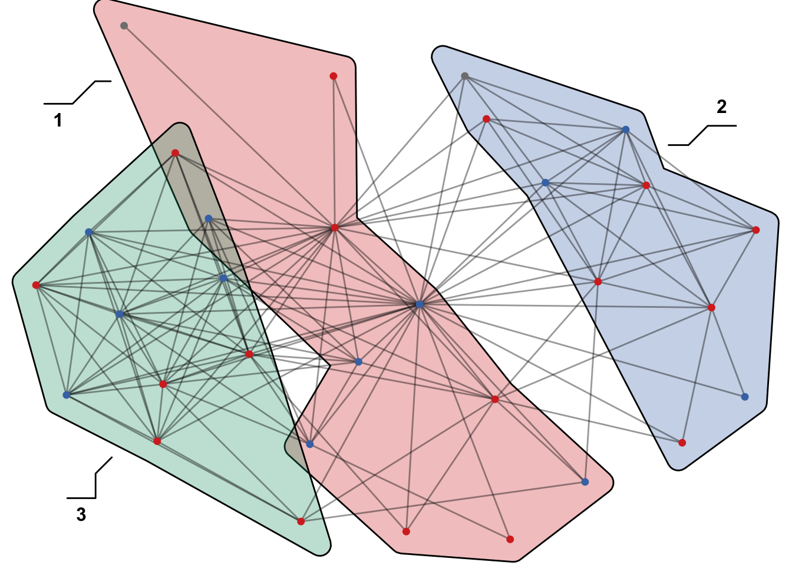
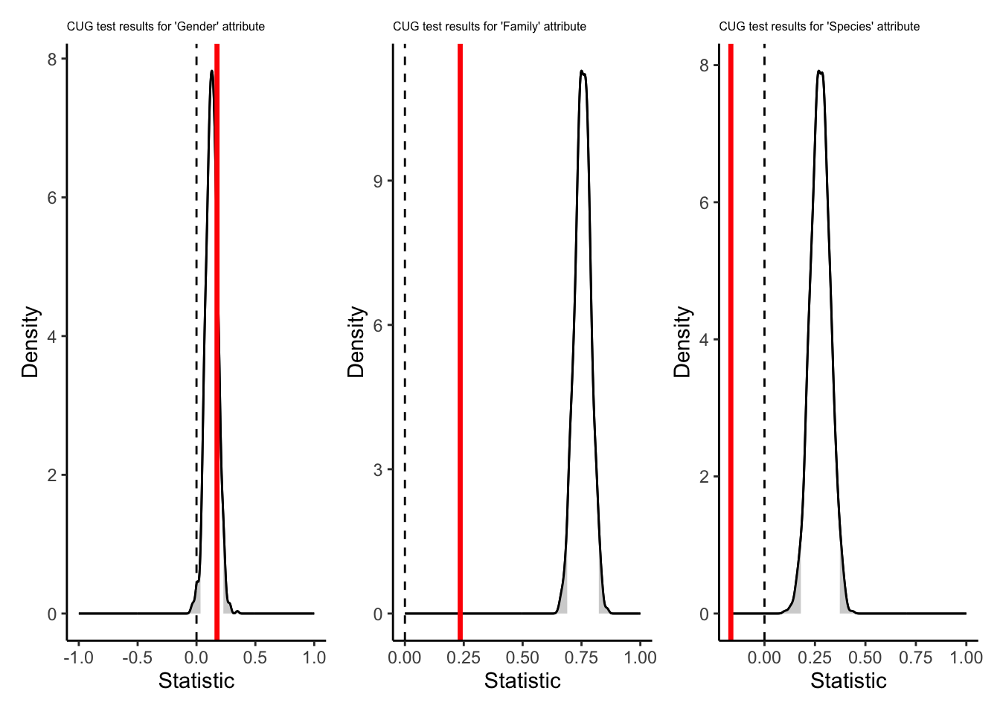
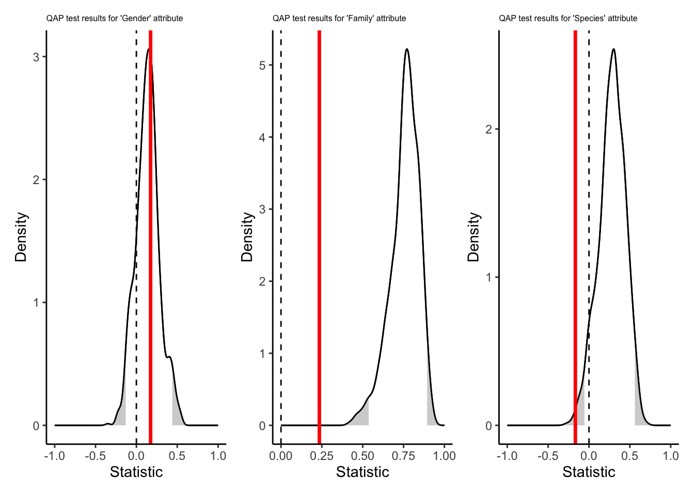

(autographr(twilightmut, edge_size="size",labels = FALSE, node_color = "gender", node_group = "family") + ggtitle(" Twilight Network Grouped by Family") + theme(plot.title = element_text(size=10)) | autographr(twilightmut, edge_size="size",labels = FALSE, node_color = "gender", node_group = "species") + ggtitle(" Twilight Network Grouped by Species") + theme(plot.title = element_text(size=10)))Beyond Fangs and Fur: A Network Examination of Homophily in the Twilight Franchise

Introduction
Have you ever wondered about the twilight series? The tale of one girl and two boys entangled in a love triangle. Despite belonging to distinct families and originating from different species—werewolf, vampire, and human—friendships are forged, kisses exchanged… ties are formed. However, the question arises: Do these connections persistently reflect the fundamental characteristics (species, gender, and family) the characters so desperately fight to overcome?
Methodological Approach
This study1 undertakes a rigorous examination of network data derived from the Twilight and New Moon installments, focusing specifically on the role of homophily within character connections. The analytical framework comprises Walktrap community detection as the initial step, followed by an examination of EI Indexes, Conditional Uniform Graphs (CUGs), and Quadratic Assignment Procedure (QAPs) tests.
Data
The dataset utilized for this investigation is sourced from Havard Dataverse2, encompassing two distinct data files related to Twilight and Twilight: New Moon. In each movie, nodes represent individual speaking characters, and ties are defined by instances of characters conversing on screen together. Consequently, two networks are generated, comprising 31 and 36 nodes, respectively, interconnected by weighted undirected ties. Additionally, character attributes such as family, gender, and species were incorporated into a .csv file based on personal knowledge of the movie franchise.
The Network
Twilight
New Moon
(autographr(newmoonmut, edge_size="size",labels = FALSE, node_color = "gender", node_group = "family") + ggtitle(" New Moon Network Grouped by Family") + theme(plot.title = element_text(size=10)) | autographr(newmoonmut, edge_size="size",labels = FALSE, node_color = "gender", node_group = "species") + ggtitle(" New Moon Network Grouped by Species") + theme(plot.title = element_text(size=10)))The number of groups was reduced since there were groups with less than 2 nodes.
Community Analysis
Twilight

New Moon

The above network graph reveals Walktrap clustering occurring predominantly along family and/or species lines, prompting further investigation through the application of CUG and QAP tests to assess homophily.
Hypotheses
Given the primary focus on understanding the impact of homophily on character interactions within the Twilight franchise, the following hypotheses are posited:
H1: Characters from the same species are more likely to share a tie.
H2: Characters from the same family are more likely to share a tie.
H3: Characters from the same gender are more likely to share a tie
Results and Discussion
Examination of EI Indexes
Twilight (Species, Gender, Family)
[1] -0.167[1] 0.174[1] 0.235New Moon (Species, Gender, Family)
[1] 0.00422[1] 0.122[1] 0.198Upon scrutinizing the EI Indexes, it is observed that the scores for both movies and all variables are fairly close to 0. This initial analysis indicates a lack of discernible homophily (-1) or heterophily (1) within the Twilight franchise network. However, this score does not compare network homophily for specific character attributes with a randomly generated network of equivalent size and density. To assess the significance of these scores, CUG and QAP tests are employed to determine if the observed homophily or heterophily deviates from chance expectations.
CUG Tests
Twilight

New Moon

The outcomes of the CUG Tests, which involve the random generation of networks with identical size and density, reveal statistically significant homophily for species and family in both the Twilight and New Moon networks. Although the coefficients closely approach 0 (as previously indicated), all randomly generated networks consistently exhibit larger EI scores. Consequently, there is a significantly more homophily present than expected by randomization, lending support to H1 and H2.
Interestingly, the CUG Test results pertaining to gender yield intriguing findings. Specifically, no evidence of homophily for gender is observed in Twilight, whereas New Moon exhibits significant homophily for gender. This presents conflicting evidence for H3, suggesting an evolving significance of gender in character interactions as the series progresses.
QAP Tests
Twilight

New Moon

Considering the networks’ cinematic nature characterized by a few central characters, a QAP test is deemed more appropriate due to its ability to maintain network structure while randomly reassigning variables.
This analysis yields similar results. Notably, for both Twilight and New Moon, homophily for family holds the highest significance within the respective networks. At this significant level, the null hypothesis is confidently rejected in favor of H2, asserting that characters from the same family are significantly more likely to share a tie.
While family homophily attains the highest significance, there is still a notable level of homophily for species in both Twilight and New Moon. This reinforces H1, suggesting that characters sharing the same species are more likely to share ties. It is noteworthy that the significance level for homophily for species undergoes a shift when the network structure is preserved, implying a certain degree of heterogeneity in species within this particular network structure compared to random.
At the lowest significance thresholds inconclusive results persist for H3.
Conclusion
This analysis indicates that within the werewolf-vampire-human realm, characters don’t surpass their familial bonds or their species diversity to establish communication-based connections. Thus, each time Bella kisses Edward or expresses feelings to Jacob, she is not merely contending with her emotions but also grappling with the powerful family and species homophily entrenched within the Twilight network.
Footnotes
Migraph version 1.1.9 and Manynet version 0.2.10 were used↩︎
Kaminski, Jermain; Schober, Michael; Albaladejo, Raymond; Zastupailo, Oleksandr; Hidalgo, César, 2018, “network_metadata.tab”, Moviegalaxies - Social Networks in Movies, https://doi.org/10.7910/DVN/T4HBA3/NGCUG9, Harvard Dataverse, V3↩︎